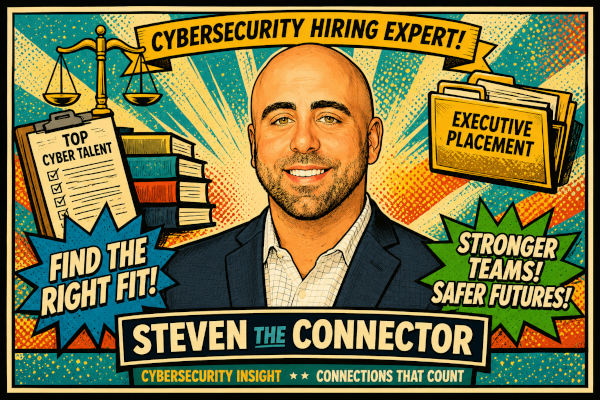
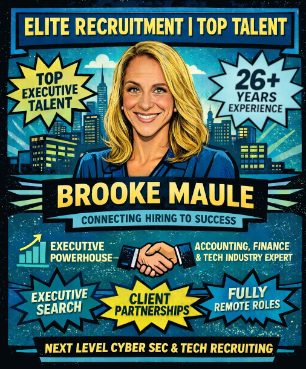
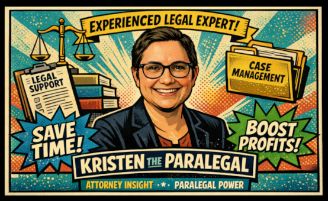
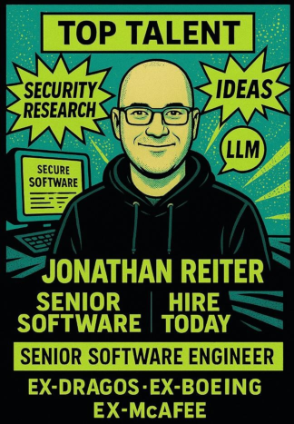
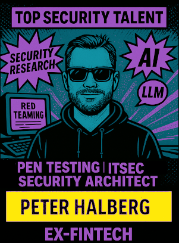
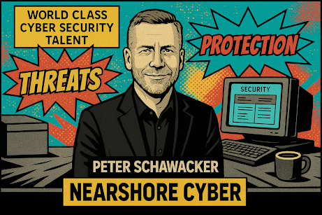

Steven George II with CyberExecConnect

Steven S. George II is a strategic cybersecurity executive recruiter who brings precision, credibility, and long-term thinking to every search. Steven represents an excellent caliber of recruiting by approaching executive placement with the mindset of a business leader. For him, hiring is about far more than filling a role, rather aligning talent with the mission. He specializes in cybersecurity leadership, executive search, and highly specialized technical placements and elite security practitioners. As the Founder & CEO of CyberExecConnect, Steven has built his practice around quality over quantity.
If your organization is building or strengthening its cybersecurity team, Steven serves as an extension of your leadership—not simply a recruiter. His commitment to integrity, strategic partnership, and long-term relationships ensures every search is handled with professionalism and purpose.
Might be worth it to reach out to Steven for any open roles!
See more about CyberExecConnect at his very nice website or contact directly at 703-505-6679.
Referral for Brooke Maule with Syntagma Group

Today, I had one of those rare, high signal recruiting convos with Brooke Maule which, honestly, recalibrated how I think about the market.
Brooke brings a kind of precision that is strategic in nature with transparency at its core. You can tell she has spent over two decades stress testing hiring strategies in the real world, not just observing them. She quickly maps skills to market demand, pressure tests positioning, and then iterates in real time. The conversation felt far removed from a scripted recruiting pitch. It came through as a clear signal in a difficult market, grounded, credible, and unexpectedly energizing, with a real sense of forward momentum.
If you are serious about understanding where you fit, how to position yourself, and how to access opportunities that are not obvious, Brooke Maule with Syntagma Group is someone you want in your corner.
Reach out to Brooke to touch base on open roles or find the right fit!
See more about Syntagma Group here or call direct at 857-449-0412.
Referral for Kristen the Paralegal

Kristen Comstock is a detailed, organized, and efficient paralegal. Kristen represents a rare caliber of paralegal support. She operates with the mindset of an attorney, bringing judgment, precision, and strategic awareness to every matter she touches. Her work moves fluidly between substantive legal analysis, meticulous case management, and the human realities that define high stakes legal practice.
She specializes in employment law, civil rights, and criminal defense, supporting attorneys who are carrying heavy caseloads and significant responsibility. Kristen understands the daily pressures of the profession. Looming deadlines, complex filings, demanding clients, and the constant risk that critical details may slip when bandwidth is stretched. She steps in as a stabilizing force, providing clarity, structure, and reliable execution where it matters most.
With a Juris Doctor and more than a decade of experience in the legal profession, Kristen is trusted with both cases and clients. She thinks in terms of substance, strategy, and follow through, not just task completion. Her work reflects a deep respect for the role attorneys play in empowering individuals and advancing justice, and she brings that same commitment to every engagement.
If you are building a practice that requires dependable, attorney minded support and you need someone who anticipates problems before they surface, Kristen Comstock is the partner you are looking for.
Choose Kristen for all of your paralegal needs.
See more here.
Jonathan Reiter Referral

Jonathan Reiter is one of those rare minds in cybersecurity who can think across multiple layers of abstraction at once, redefining what true focus looks like. He moves effortlessly, like a ninja on a mission, between software development, threat intelligence, large scale distributed systems, machine learning, and adversary emulation.
His technical pedigree alone is impressive. At Dragos, Inc., he helped build Neighborhood Keeper, a real-time telemetry system for industrial control systems that essentially gives critical infrastructure a collective immune system. Before that, he scaled McAfee threat intelligence systems to process over a billion events per day, and optimized IoT cloud telemetry at Circle Media Labs Inc. that spanned over 100,000 households.
Jonathan is extraordinary, and you would be amiss not to add him to your payroll, stat. He thinks in terms of elegance, reproducibility, and intellectual gymnastics. He's fascinated by probabilistic programming, automated verification, and the strange overlap between self-attention models and adversary reasoning systems. He's also about to speak at CYBERWARCON, among a lineup of researchers and defenders who are redefining what "cybersecurity" even means in this decade, just as he redefined so much for many of us just hearing him speak.
If you are building the next generation of cyber defense system or data platforms and you need a brain who is eons smarter than you will ever be, he is the treasure you are looking for.
Choose Reiter today. We have. #votereiter !
See more here.
Peter Halberg (milosilo) Referral

Peter Halberg is a proven cybersecurity leader with decades of progressive experience driving offensive security, red teaming, and enterprise-scale vulnerability management across global environments. His career reflects a rare blend of technical mastery and executive-level strategic vision that most cyber security organizations are truly lacking. Steeped in technical expertise, he is prime for as a superb security lead or technical architect or the next level of rising technical leadership (think Executive or CISO).
Peter has spearheaded groundbreaking work integrating generative AI into Red Team operations, transforming penetration testing and incident response capabilities. His leadership in developing new approaches have positioned his organizations at the forefront of proactive threat detection in tandem. Throughout his tenure, Peter has repeatedly demonstrated unparalleled capability, grit and determination (despite odds) to align security programs at exactly the right threshold for success. After a long chat (Oct 21, 2025), I realize I want to post to increase his options. Please consider him for hire today.
Recruiters, executive talent search, take notice, with his skillset, he won't be on the market for long.
Contact him today!
See more here.
Referring Peter Schawacker

Had an awesome conversation today (Oct 20, 2025) with Peter Schawacker, former CISO and now CEO of Nearshore Cyber, who is doing some really smart work around AI Security and modern cyber defense. Peter has built this incredible network of people who live and breathe security... the kind of crowd that loves to talk code, automation, and real-world defense, not just theory. Peter's perspective on AI-native security and how to build a nearshore ecosystem around it is genuinely ahead of the curve. If you care about where cyber, AI, and community intersect, he is definitely someone you should know. Contact him today to present your resume and skills or just to talk shop about the cyber community.
Contact him today!
See more here.
Referring Susan Siljander
Today (Oct 17, 2025) had an exceptional conversation with Susan Siljander about my background and fit for several roles. Susan operates far beyond traditional recruiting, she performs a sneak attack presenting both job reqs and resume advice. She brings a strong engineering foundation and a structured, strategic approach to employer positioning. Our discussion was a true pleasure; a working session that combined market insight, candid feedback, and pragmatic guidance. Her electric honesty is invaluable, and her perspective on the job market is both current and actionable. I strongly recommend connecting with Susan for consulting and career strategy.
Contact her today!
See more here.